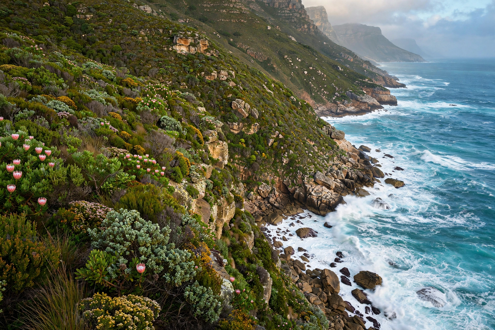

[Image placeholder: The cliffs of the Cape of Good Hope from Cape Point]The **Cape of Good Hope** is a rocky headland on the Atlantic coast of the Cape Peninsula in South Africa, near Cape Town. Long thought to be Africa's southernmost point (that distinction belongs to Cape Agulhas, some 150 km east), it is the legendary turning point where ships on the Europe–Asia route began heading east — the 'hope' being the sea route to India.
Rounded by Bartolomeu Dias in 1488 (who called it the Cape of Storms; King John II of Portugal reportedly renamed it for the promise it opened), and by Vasco da Gama in 1497 on the first voyage to India, the Cape became a fixture of navigation lore, haunted by the Flying Dutchman legend. The headland lies within the Cape Floristic Region's fynbos in Table Mountain National Park, with baboons, ostriches and the old lighthouse at Cape Point nearby, above cliffs where the cold Benguela Current meets warmer waters.
The Cape is often described as where the Atlantic and Indian Oceans meet and as Africa's southern tip; both are wrong — the ocean boundary and the continent's southernmost point are at Cape Agulhas.